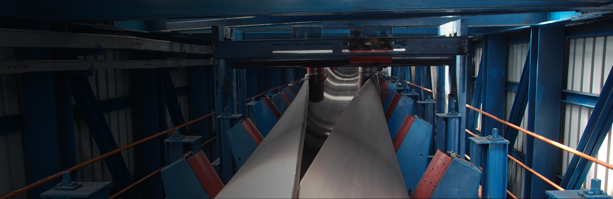

Главная
Наша продукция
Ленты Phoenix CBS
Ленты Matador Rubber
Ленты Continental ContiTech
Вертикальные конвейера
Мониторинг конвейерных лент
Материалы для стыковки конвейерных лент
Конвейерные ролики
Композитные материалы Chesterton
Вулканизационные пресса
Сервис
Шеф-монтаж конвейерной ленты
Сервис конвейерного парка
Футеровка барабанов
Что включает в себя мониторинг конвейеров
Инструкции
Инструкция по горячей вулканизации тросовых лент
Классификация резины конвейерных лент
Опросные листы
Каталоги
Галерея работ
Контакты
Вакансии
Что включает в себя мониторинг

Протокол осмотра конвейеров
1. Электродвигатель привода
надежность крепления болтового соединения к раме или редуктору
состояние передаточной муфты между электродвигателем и редуктором
провод заземления корпуса
температура двигателя (трогать тыльной стороной кисти руки)
2. Редуктор привода
болтовое крепление крышек подшипника
уровень масла (смотровой глазок или щуп)
температура корпуса и подшипников
состояние передаточной муфты между редуктором и приводным барабаном
3. Лента транспортерная
состояние стыков
состояние боковых кромок
наличие латок и заклепок
4. Барабан приводной (и 4.1 обводной возле барабана)
исправность (наличие) футеровки на обечайке
наличие смазки в подшипниковых узлах
крепление корпуса подшипников (оси) на раму
5. Барабан хвостовой
исправность (наличие) футеровки на обечайке
наличие смазки в подшипниковых узлах
наличие смазки в подшипниковых узлах
крепление корпуса подшипников (оси) на раму
6. барабан натяжной (и обводные)
исправность (наличие) футеровки на обечайке
исправность натяжного устройства (блочки обводные, винты, трос и зажимы)
наличие смазки в подшипниковых узлах
крепление корпуса подшипников (оси) на раму
7. Первичное очистное устройство (грубой очистки)
надежность крепления конструкции
прилегание очистителя к ленте
износ очистных элементов (полиуритана)
8. Вторичное очистное устройство (тонкой очистки)
надежность крепления конструкции
прилегание очистителя к ленте
наличие смазки в подшипниковых узлах
износ очистных элементов
9. Плужковые сбрасыватели (очиститель холостой ветви ленты конвейера)
надежность крепления конструкции
прилегание очистителя к ленте
наличие смазки в подшипниковых узлах
износ очистных элементов
10. Рабочие и поддерживающие ролики
комплектность и исправность рабочих роликов и роликоопор
комплектность и исправность рабочих поддерживающих и роликоопор
11. Демпферный стол
крепление стола к раме конвейера, болтовые крепления демпферных балок к столу
износ демпферных балок
12. Датчик скорости ленты конвейера
световые импульсы (присутствуют)
целостность корпуса
13. Датчик пробуксовки ленты конвейера
световые импульсы (присутствуют)
целостность корпуса и креплений
14. датчик схода ленты (вдоль всей длины конвейера)
целостность корпуса и креплений
15. Металлодетектор
надежность крепления болтового соединения к раме
просыпь руды на металлодетекторе
звуковая и световая сигнализация, красный индикатор METAL при срабатывании на металл
16. Магнитная шайба
исправность тросов или цепей на узле подвеса или кранбалки
состояние кабельной подвески (изоляция)
пульт управления кранбалкой (тросик заземления, целостность корпуса, кнопки управления)
17. Весы конвейерные
предвесовые, весовые и после весовые ролики (вращение роликов, деформация)
просыпь руды на раме конвейерных весов
18. Датчики забивки перегрузочной течки
целостность корпуса, креплений и мембраны
19. Предпусковая звуковая и световая сигнализация
исправность звуковой серены
исправность световых индикаторов
20. Став конвейера
состояние металлоконвструкций става конвейера
наличие и состояние заземляющих перемычек между участками става
крепление болтовых соединений става
21. Став конвейера
наличие и исправность бокового уплотнения
износ внутренних футеровок бортов